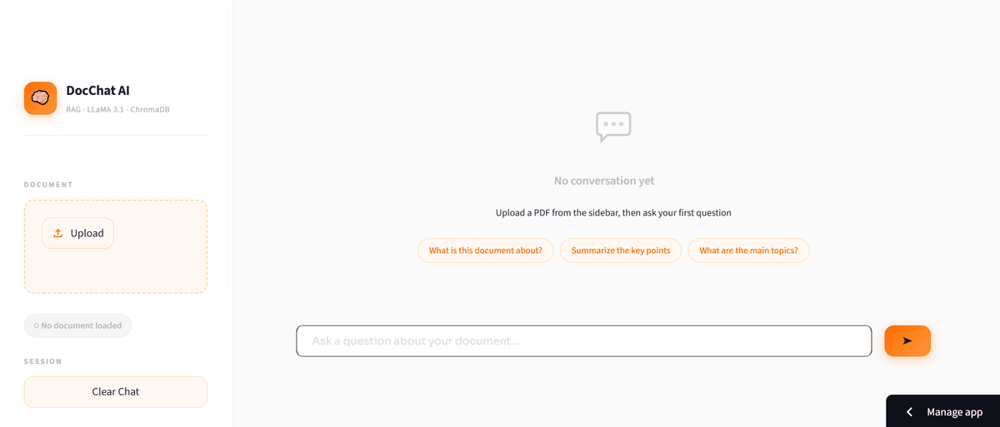
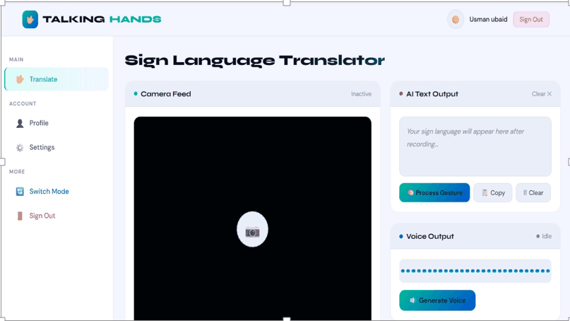
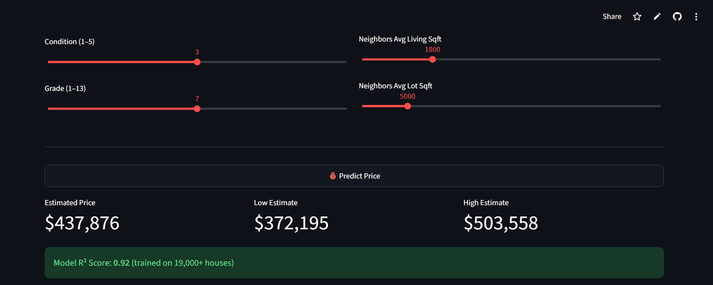
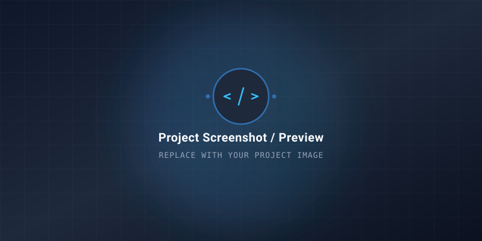

Computer Science graduate and AI Engineer based in Lahore, Pakistan. I build Generative AI and RAG systems, train computer vision and deep learning models, and deploy them as interactive apps that run in real time.
I'm a Computer Science graduate from the University of Education, Lahore, with a year of hands-on experience building and deploying Machine Learning and Generative AI projects. My work covers the full ML pipeline: data preprocessing, model training and evaluation, and shipping the result as a working web app.
I currently work as an AI Engineer, building RAG-based pipelines with LangChain, ChromaDB and Hugging Face, and developing computer vision and deep learning models that run inference in real time.
My Final Year Project, Talking Hands, is an AI sign language recognition system that translates gestures into speech in English and Urdu — built with MediaPipe Holistic and an LSTM trained on the WLASL dataset.
Currently building ML pipelines and Generative AI systems in a production setting.
Building and deploying Machine Learning and Generative AI solutions, including RAG-based pipelines using LangChain, ChromaDB and Hugging Face Transformers. Also developing computer vision and deep learning models with OpenCV, MediaPipe, CNN and LSTM, and integrating them into interactive Streamlit applications for real-time inference.
Built and deployed AI and Computer Vision applications. Developed an intelligent Language Translator using NLP and sequence models, and implemented real-time Object Detection systems using OpenCV and deep learning algorithms, covering dataset annotation, model training, and performance evaluation.
Completed a 6-week intensive remote internship focusing on core Machine Learning and Data Science workflows. Performed exploratory data analysis (EDA), feature engineering, and model training for predictive AI pipelines while collaborating in a remote agile engineering environment.
Full pipeline coverage — from raw data to a deployed, user-facing application.
Supervised & unsupervised learning, computer vision, NLP and sequence models trained end-to-end.
LLM-powered apps and RAG pipelines, from vector storage to context-aware answers.
Python-first, with modern AI/ML frameworks, computer vision and deep learning libraries.
Turning notebooks into production-ready web apps, with version control and containerization.
A selection of ML and GenAI systems I've designed, trained and shipped.

A Retrieval-Augmented Generation app that lets users upload PDF documents and ask questions in natural language. LangChain, ChromaDB and LLaMA retrieve the relevant context and generate accurate answers, wrapped in a Streamlit interface.

Final Year Project translating hand gestures into speech in both English and Urdu. MediaPipe Holistic captures 387 facial, hand and body landmarks per webcam frame, feeding an LSTM trained on the WLASL dataset — 72% validation accuracy, with responses refined using Hugging Face Transformers.
A model that flags fraudulent transactions in a highly imbalanced financial dataset. SMOTE improves minority class representation before training a Logistic Regression classifier, evaluated on Precision-Recall and ROC-AUC with emphasis on reducing false negatives.
An NLP pipeline covering text cleaning, tokenization, stemming and TF-IDF feature extraction, feeding a Naive Bayes classifier. Reached 97.16% accuracy and 99% precision, deployed as a Streamlit web application.

A regression model estimating residential property prices on the King County Housing dataset. A Gradient Boosting Regressor reached an R² score of 0.88, served through a Streamlit app that predicts prices from user-provided property features.

Demo project description. Replace with your own project summary explaining the model architecture (e.g. LLMs, Transformers, RAG), dataset utilized, and the user application interface.
Demo project description. Replace with your computer vision project summary detailing object detection/tracking algorithms (YOLOv8/v11, OpenCV), dataset training, and live inference performance.
Demo project description. Replace with your machine learning project summary outlining feature engineering, predictive modeling, training metrics, and deployed interactive dashboard.
Have a role or project in mind? Send a message below — I usually reply within a day.